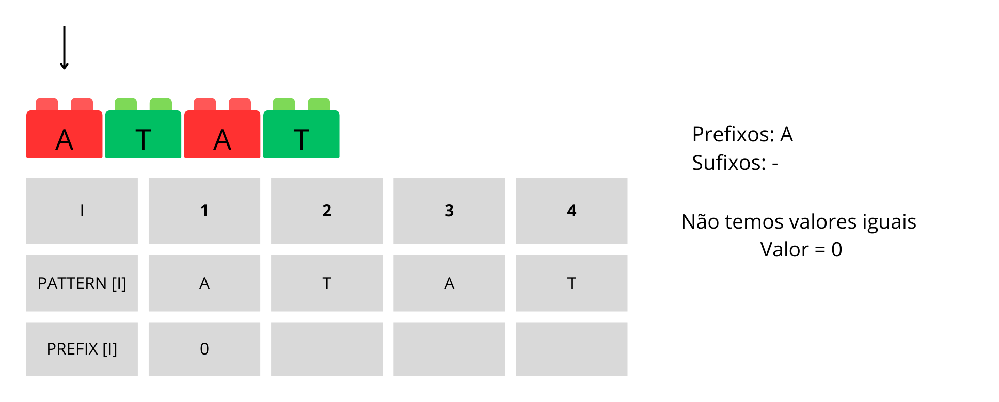
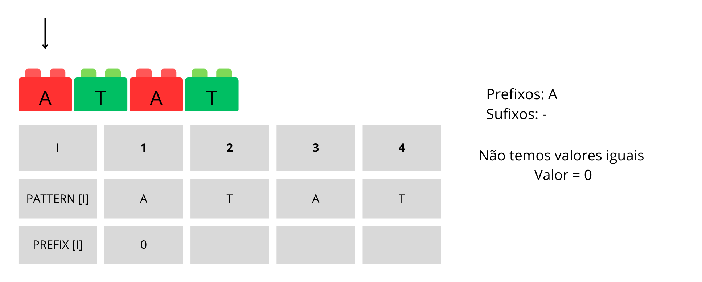

É uma das soluções mais eficientes para o problema de correspondência de padrões em uma string.
Desenvolvido em 1977 pelos pesquisadores Donald Knuth, James Morris e Vaughan Pratt
Processamento de Linguagem Neural, Ánalise de Dados e Bioinformática
=
O algoritmo KMP compara o primeiro caractere do padrão (frase ou palavra) com o primeiro caractere do texto.
Se os demais caracteres tiverem correspondência, a comparação ocorre caractere por caractere até encontrar uma diferença.
Quando uma diferença é encontrada, o algoritmo utiliza uma tabela para determinar o salto necessário para o próximo caractere.
=
=
=
=
=
=
=
=
=
=
Vantagens do Algoritmo
Eficiência: Evita comparações desnecessárias, resultando em um processo de busca mais rápido.
Utilização da tabela: A tabela auxilia no cálculo dos saltos, otimizando a localização dos padrões.
Handout
Agora podem tanto fazer individualmente quanto em grupo…
…e discussões em grupo podem de fato fazer diferença…
…mas, em algum momento, é importante fazer individualmente.
Se há gabarito, veja só em último caso.
Observações
Aprendizado ativo é fazer, não ler.
Exceto em um ou outro caso excepcional, uma atividade é possível sem consulta além do material de aula dado até o momento.
Além disso, muitas vezes a resposta da atividade é necessária para a compreensão do restante.
Ou seja, “deixar para entender depois” não faz sentido. “Depois” depende de “entender”.
Aviso
Precisa:
Explicar muito bem, com exercícios, sobre o “pulo” do algoritmo
Melhorar a parte da tabela de prefixos/sufixos e os exercícios
Implementação, pode ser um exercício desafio
1.O Problema da Busca de Substrings
A busca de substrings é um problema comum em ciência da computação. A questão é: dado um texto e um padrão, podemos encontrar todas as ocorrências do padrão dentro do texto?
A solução mais simples, mas também a mais lenta, é verificar cada substring do texto em sequência para ver se ela corresponde ao padrão, a chamada força bruta. No entanto, essa abordagem tem uma complexidade de tempo de O(nm), onde n é o comprimento do texto e m é o comprimento do padrão. Isso é muito ineficiente, especialmente para textos longos.
Felizmente, existem algoritmos mais rápidos. O Algoritmo de Knuth-Morris-Pratt (KMP) é um desses algoritmos.
2.O Algoritmo KMP
O algoritmo KMP foi inventado por Donald Knuth, Vaughan Pratt e James H. Morris em 1977.
O KMP se baseia em uma observação importante: quando encontramos um mismatch (desajuste) após alguns matches, então já sabemos alguns caracteres no texto do próximo segmento. Logo, não precisamos mover o segmento para a próxima imediata posição, podemos usar algumas das informações que já obtivemos para mover o segmento para a posição ideal.
O algoritmo KMP utiliza uma tabela de valores pré-computados chamada de tabela LPS (Longest Proper Prefix which is also suffix - Maior prefixo apropriado que é também sufixo) para pular caracteres desnecessários.
3.Construindo a tabela LPS
A tabela do algoritmo refere-se à tabela de sufixos e prefixos. Nesse contexto, a tabela é construída a partir dos caracteres desejados, gerando os sufixos e prefixos correspondentes. Em seguida, verifica-se o maior tamanho entre os sufixos e prefixos que são iguais. Esse tamanho é usado como um índice que indica quantos caracteres a palavra ou frase deve avançar.
Agora que aprendemos, vamos fazer alguns exercícios para fixar o conteúdo.
Exercício 1
Construa a tabela de prefixos e sufixos para:
GabaritoGabarito Detalhado

Exercício 2
Construa a tabela de prefixos e sufixos para:
GabaritoGabarito Detalhado
Exercício 3
Construa a tabela de prefixos e sufixos para:
GabaritoGabarito Detalhado
Aviso
Escrever mais (explicação dos exercícios, etc) e falar da complexidade
4.Implementação em C
O KMP usa uma tabela de falhas (também conhecida como tabela de borda) para armazenar informações sobre o padrão que são usadas para evitar comparações repetidas. A tabela de falhas é construída antes de iniciar a correspondência de padrões e é baseada no padrão a ser encontrado.
Aviso
A ser melhorado
Pergunta
Como seria uma implementação do algoritmo KMP em C?
Resposta
Aqui está um exemplo de implementação do algoritmo KMP em C:
#include <stdio.h>
#include <string.h>
void preencher_tabela(int tabela[], char padrao[])
{
int tam_padrao = strlen(padrao);
int i = 0, j = -1;
tabela[0] = -1;
while (i < tam_padrao)
{
while (j >= 0 && padrao[i] != padrao[j])
{
j = tabela[j];
}
i++;
j++;
tabela[i] = j;
}
}
void encontrar_padrao(char texto[], char padrao[])
{
int tam_texto = strlen(texto);
int tam_padrao = strlen(padrao);
int tabela[tam_padrao];
preencher_tabela(tabela, padrao);
int i = 0, j = 0;
while (i < tam_texto)
{
while (j >= 0 && texto[i] != padrao[j])
{
j = tabela[j];
}
i++;
j++;
if (j == tam_padrao)
{
printf("Padrao encontrado na posicao %d\n", i - j);
j = tabela[j];
}
}
}
int main()
{
char texto[] = "ababcabcabababcabcabc";
char padrao[] = "abcabc";
encontrar_padrao(texto, padrao);
return 0;
}


